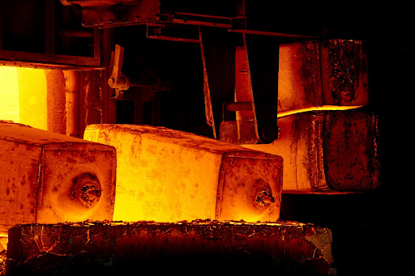
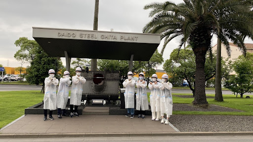

大同特殊鋼株式会社様にインタビュー!
1984年にアメリカで設立されたTED「価値あるアイデアを広める（Ideas worth spreading)」の精神に基づき、名古屋大学でTEDxイベントを開催しようと、2013年度に誕生したTEDxNagoyaU。
今回は、2015年度の開催から計8回、TEDxNagoyaUをサポートし続けて下さる大同特殊鋼株式会社様（以下、大同特殊鋼様）に、お話をお伺いしました！

TEDxNagoyaU：今年もTEDxNagoyaUをご支援いただき、ありがとうございます！まず大同特殊鋼様の事業内容について改めてお伺いしてもよろしいでしょうか？
大同特殊鋼様：当社はステンレスなどに代表される「熱に強い」、「サビに強い」といった＋α の付加価値を加えた“鋼”である「特殊鋼」の製造・加工・販売を行っている世界最大級の特殊鋼専業メーカーです。
当社の特殊鋼は、その特性を活かして、自動車や航空機、船舶、鉄道からパソコン、スマートフォン、食器、ボールペンの先端など、様々な形で皆さんの暮らしの発展に貢献しています。

TEDxNagoyaU：2020年でのインタビューでは、TEDの目的や精神には、大同特殊鋼様の経営理念にも似ている部分があるとおっしゃっていましたが、具体的な類似点はどこにあるのでしょうか？
大同特殊鋼様：当社は「素材の可能性を追求し、人と社会の未来を支え続けます」というグループ経営理念を掲げていますが、素材の可能性の追求は「素材」というものを通しての「価値の追求」でもあります。そのためTEDが様々なものに新たな価値を見出して行くことに近しいものがあると感じています。
また、当社の行動理念である「高い志を持つ」、「誠実に行動する」、「自ら成長する」「チームの力を活かす」、「挑戦しつづける」を、TEDxNagoyaUの皆さんの活動にも感じています。
TEDxNagoyaU：TEDxNagoyaUは今年で10周年を迎えます。率直に何を期待していますか？
大同特殊鋼様：今後も新たな価値を発見・発信していく場になってほしいと思います。
また、TEDxという活動を通して学生の皆さんが挑戦・成長していく場所であり続けて欲しいと思っています。
TEDxNagoyaU：大同特殊鋼様は2015年からご協賛をしてくださっていますが、ご協賛をしてから何か変化はありましたでしょうか？
大同特殊鋼様：皆さんとのやり取りや、トークを聴講した社員に、新しい気づきや新たな視点、価値を見出す意識を与えてくれており、そういったものは社業にも活かされていっていると思います。
TEDxNagoyaU：大同特殊鋼様の今後のVisionや目標などはありますか？
大同特殊鋼様：私たち大同特殊鋼は、素材の可能性を追求し、人と社会の未来を支え続けることを目的に、世界に貢献する特殊鋼メーカーを目指し、お客様との共創を通じて、世界の成長を支える新しい特殊鋼を産み続けたいと思っています。
TEDxNagoyaU：最後にこの記事を見ている方、メインイベントに参加される方に一言お願い致します！
大同特殊鋼様：私たちが個人で考えられることは限られていますが、お互いの気づきを共有することによって、それは大きく広がっていくと思います。新しい気づきや出会いにワクワクする気持ちが互いに“共鳴”し合い、大きな価値を生んでいってくれることを願っています。
TEDxNagoyaU：ありがとうございます！！
今後も大同特殊鋼様と深い関係を築いていけたらと考えております！大同特殊鋼様とは、先月一部メンバーでお伺いさせていただいた工場見学のような、NagoyaUと協賛企業の枠を超えた交流も今後もっと増やすことができたらと考えております！ どうか今後とも末永くよろしくお願いいたします！！
